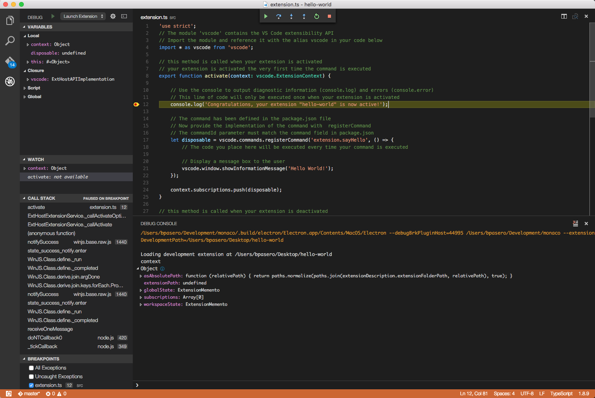

Running and Debugging Your Extension
You can use VS Code to develop an extension for VS Code and VS Code provides several tools that simplify extension development:
- Yeoman generators to scaffold an extension
- IntelliSense, hover, and code navigation for the extension API
- Compiling TypeScript (when implementing an extension in TypeScript)
- Running and debugging an extension
- Publishing an extension
Creating an Extension
We suggest you start your extension by scaffolding out the basic files. You can use the yo code Yeoman generator to do this and we cover the details in the Yo Code document. The generator will ensure everything is set up so you have a great development experience.
Running and Debugging your Extension
You can easily run your extension under the debugger by pressing F5. This opens a new VS Code window with your extension loaded. Output from your extension shows up in the Debug Console. You can set break points, step through your code, and inspect variables either in the Debug view or the Debug Console.

Let’s peek at what is going on behind the scenes. If you are writing your extension in TypeScript then your code must first be compiled to JavaScript.
Compiling TypeScript
The TypeScript compilation is setup as follows in the generated extension:
- A
tsconfig.jsondefines the compile options for the TypeScript compiler. Read more about it at the TypeScript wiki or in our TypeScript Language Section. - A TypeScript compiler with the proper version is included inside the node_modules folder.
- The API definition is included in
node_modules/vscode.
The TypeScript compilation is triggered before running your extension. This is done with the preLaunchTask attribute defined in the.vscode/launch.json file which declares a task to be executed before starting the debugging session. The task is defined inside the .vscode/tasks.json file.
Note: The TypeScript compiler is started in watch mode, so that it compiles the files as you make changes.
Launching your Extension
Your extension is launched in a new window with the title Extension Development Host. This window runs VS Code or more
precisely the Extension Host with your extension under development.
You can accomplish the same from the command line using the extensionDevelopmentPath option. This option tells VS Code in what
other locations it should look for extensions, e.g.,
code --extensionDevelopmentPath=_my_extension_folder.
Once the Extension Host is launched, VS Code attaches the debugger to it and starts the debug session.
This is what happens when pressing F5:
.vscode/launch.jsoninstructs to first run a task namednpm..vscode/tasks.jsondefines the tasknpmas a shell command tonpm run compile.package.jsondefines the scriptcompileastsc -watch -p ./- This eventually invokes the TypeScript compiler included in node_modules, which generates
out/src/extension.jsandout/src/extension.js.map. - Once the TypeScript compilation task is finished, the
code --extensionDevelopmentPath=${workspaceRoot}process is spawned. - The second instance of VS Code is launched in a special mode and it searches for an extension at
${workspaceRoot}.
Changing and Reloading your Extension
Since the TypeScript compiler is run in watch mode, the TypeScript files are automatically compiled as you make changes. You can observe
the compilation progress on the left side of the VS Code status bar. On the status bar you can also see the error and warning counts of a
compilation. When the compilation is complete with no errors, you must reload the Extension Development Host so that it picks up
your changes. You have two options to do this:
- Click on the debug restart action to relaunch the Extension Development Host window.
- Press Ctrl+R (Mac: Cmd+R) in the Extension Development Host window.
Next Steps
- Testing your Extension - Learn how to write unit and integration tests for your extension
- Publishing Tool - Publish your extension with the vsce command line tool.
- Extension Manifest file - VS Code extension manifest file reference
- Extension API - Learn about the VS Code extensibility APIs
Common Questions
Q: How can I use API from my extension that was introduced in a newer release of VS Code?
A: If your extension is using an API that was introduced in a newer release of VS Code, you have to declare this dependency in theengines field of the package.json file of the extension.
Here are the steps:
- Set the minimal version of VS Code that your extension requires in the
enginefield of thepackage.json. - Make sure your devDependency for the
vscodemodule is at least0.11.0. - Add a
postinstallscript to yourpackage.jsonlike this:
|
- Type
npm installfrom the root of your extension. - The
vscodemodule will download the appropriate version ofvscode.d.tsbased on theenginefield you declared. - Go back to VS Code and see how the API for the specific version you chose appears in IntelliSense and validation.